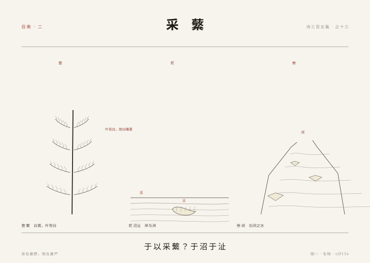
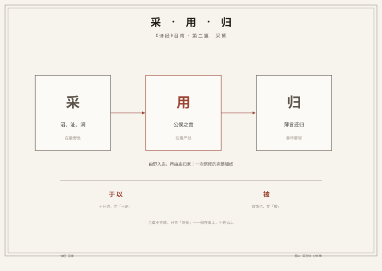

第十三篇 采蘩
召南 · 之二 SJ013
朗读 · 普通话
依经文正文朗读，句读从文；不配乐、不改速、不加拖腔。全库同一音色（豆包 TTS），非播音员录制。
一 解题
诗三判：
- 谁在说：一个看着采集与祭祀的人。前二章四问四答，问的都是一件事：在哪里采，用在哪里。
- 说什么事：采蘩——在沼泽、在小洲、在山涧；用蘩——在公侯之事、在公侯之宫。前二章只说物，第三章忽然说人：发饰之盛，早夜在公，然后回家。
- 为何编在此：《鹊巢》写「备」——家已筑好；此篇写「奉」——以祭事其先。一婚一祭，是「家」立起来的两根柱子。
《毛序》：「《采蘩》，夫人不失职也。夫人可以奉祭祀，则不失职矣。」——把此篇读作「夫人之德」的证明。
朱子《诗集传》：「南国被文王之化，诸侯夫人能尽诚敬以奉祭祀，而其家人叙其事以美之也。」——朱子补了一句「家人叙其事」，把说话的立场挪到旁观者。
本库的看法：这首诗的力量在「野」与「庙」之间的距离。
采在最野的地方——沼、沚、涧；用在最严的地方——公侯之宫。中间那一段路，是采集者的脚程。全篇不写一个「敬」字，「夙夜在公」四字就是敬；末句「薄言还归」，事毕回家，收得极轻，也极稳。
二 经文
第一章
于以采蘩？于沼于沚。于以用之？公侯之事。
第二章
于以采蘩？于涧之中。于以用之？公侯之宫。
第三章
被之僮僮，夙夜在公。被之祁祁，薄言还归。
分章：毛传、朱子皆三章，章四句。前二章四问四答，句法全同；第三章换骨——不问不答，只说人。形式一转，诗就从「物」落到了「人」身上。
三 韵读
| 一 |
沚、事 |
之部 |
| 二 |
中、宫 |
东部 |
| 三 |
僮、公；祁、归 |
东部；微部 |
前二章一韵到底，稳而平，像问答的节拍。第三章两韵：僮、公（东部）承前；祁、归（微部）另起，收在「归」字上——「还归」自成一韵，是这一篇的落脚声：事毕，脚轻。
四 字义名物
- 于以——于何，在哪里。不是「于是」「因此」。
- 蘩（fán）——白蒿。《毛传》「蘩，皤蒿也」。叶背白，秋生，水边最盛。
- 沼——水池。沚——水中小洲。
- 涧——山间溪流。
- 事——祭祀之事。
- 宫——宗庙（《毛传》「宫，庙也」）。不是「宫殿」之宫。
- 被（bì）——首饰，一说通「髲」（假发）。不是「披」。
- 僮僮——盛貌。首饰繁多之状。不是「儿童」。
- 祁祁——舒迟貌。舒缓之状。
- 夙夜——早夜，从早到晚。
- 在公——在公家之事（宗庙祭祀）。不是「在公爵之位」。
- 薄言——语助，无实义。
- 还归——回家。
五 今译
第一章
在哪里采白蒿？在池边，在小洲。采来做什么用？用在公侯的祭祀。
第二章
在哪里采白蒿？在山涧之中。采来做什么用？用在公侯的宗庙。
第三章
首饰繁盛，从早到晚在公家。首饰舒缓了，这才回家。
译注：「被」译「首饰」而不作「披」，因为下文「僮僮」「祁祁」说的都是首饰的盛与缓——若作「披」，两个叠字便无著落。「还归」译「回家」，是全篇唯一的松弛处。
六 章旨
一章：采于近水。沼、沚——水边的两处平地。蘩生在浅水，人立在岸边。
二章：采于山涧。由平地入山涧，路更远，采更难。
三章：人。首饰盛，昼夜在公；首饰缓，归。
前二章是「物」的行程：采处由近而远（沼沚→涧），用处由外而内（事→宫）。第三章是「人」的行程：由盛而缓，由公而家。三章合起来，是一次祭祀的完整弧线：采—用—归。
七 诗教
- 赋：四问四答，直陈其事，是赋中最见章法者——问句本身即是结构。
- 观：可观一「敬」。全篇不言敬，只言「夙夜」；不言德，只言「首饰之盛」。敬在事上，不在话上。
- 群：一人之采，供一族之祭。采者与受祭者，隔着一整条路。
- 怨：无怨。末句「薄言还归」甚至有一点轻快——事做完了。
八 分寸与边界
- 不可把「于以」解作「于是」「因此」。它是「于何」，是问句；解作连词，四问变成四陈述，全篇章法就塌了。
- 不可把「宫」解作宫殿。毛传「宫，庙也」，是宗庙；祭祀之所，非居处。
- 不可把「被」解作「披」。它是首饰（一说髲，假发）；下文「僮僮」「祁祁」皆状首饰，非状衣裳。
- 不可把「在公」解作「在公爵之位」。公是公家之事，非爵。
- 不可把此篇读成「夫人之德」的证明。《毛序》之说属于汉人的妇德论；诗里只有蘩、沼、涧、宫与一个「夙夜」。
九 存疑
- 蘩之用：一说荐祭（《左传》「蘋蘩蕰藻之菜，可荐于鬼神」），一说饲蚕，一说垫器。本库取荐祭，余说存录。
- 采者身份：一说诸侯夫人亲采，一说众妾，一说蚕妇。本库不坐实，只取「盛装而劳者」。
- 「被」之训：毛传「首饰」；一说髲（假发）；一说覆盖。本库从毛传。
- 「僮僮」「祁祁」：一说盛貌与舒迟貌，一说皆是「戒惧」之貌。本库从前说。
- 三章是否一场祭祀的全过程：一说三章分指采、祭、归；一说只是复沓。本库从前说——三章的次序本身即是时间。
十 跨典
- 《召南·鹊巢》——同卷开篇，一婚一祭。鹊巢写「备」，采蘩写「奉」；家之两柱。
- 《召南·采蘋》「于以采蘋？南涧之滨」——同一问式，姊妹篇。彼为季女之教，此为公侯之祭；同法而两用。
- 《左传·隐公三年》「蘋蘩蕰藻之菜……可荐于鬼神」——蘩之为祭品，此其证。
- 《礼记·祭统》「夫祭者，非物自外至者也，自中出生于心者也」——敬在内心，不在器物；正可解此篇「不言敬而言夙夜」。
- 《豳风·七月》「蚕月条桑，取彼斧斨」——农事之诗，同是劳作成篇，彼有节令，此有礼。
十一 双卡与图
双卡五对：
| 于以（于何） |
于是（连词，误训） |
| 沼、沚（近水） |
涧（山溪） |
| 事（祭祀） |
宫（宗庙） |
| 被（首饰） |
披（误训） |
| 夙夜在公 |
薄言还归 |

图一 · 蘩·沼沚·涧 名物图

图二 · 采·用·归 义理图
读图三处：
- 蘩的叶背是白的：白蒿之「白」在叶背，不在花。图上叶正面淡，背面近白——这就是「皤蒿」二字的来处。
- 沼与沚不同：沼是水边泥地，沚是水中一块可立脚的小洲。一个在岸，一个在水中央；采蘩的人两处都去。
- 涧在石间：山涧不是河，是石缝里的水。二中「于涧之中」，路比沼沚更远、更险——第二章不是重复，是加难。